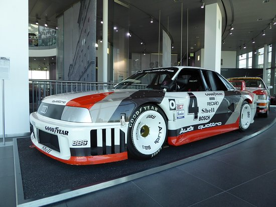

0 quattro IMSA GTO é de um por Audi Sport quattro Pico de Pike S1 conduzido derivada turbo 5-cilindro do motor de linha de alumínio com 2,2 litro de deslocamento, o que, no entanto, até 530 kW (720 hp) aqui. A potência é transmitida para a estrada através de uma caixa de 6 velocidades, que bloqueia uma marcha devido aos regulamentos da IMSA e à tração permanente nas quatro rodas da Quattro
Todos os direitos reservados por java Haters